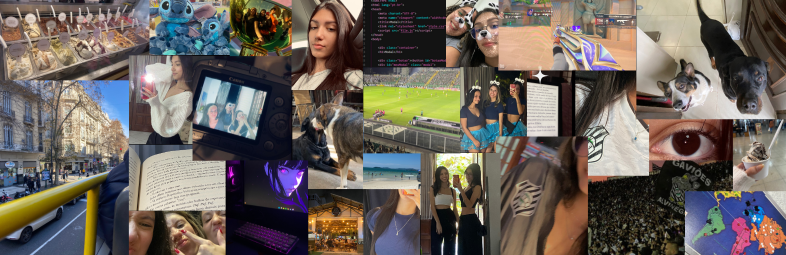

Júlia Vianna Dancona nasceu em 12 de dezembro de 2007, na cidade de Florianópolis. Durante sua formação acadêmica, frequentou apenas duas instituições de ensino. Ela iniciou seus estudos no Colégio Geração, onde permaneceu durante todo o ensino fundamental. Nesse período, além de adquirir conhecimentos fundamentais, Júlia desenvolveu habilidades sociais, senso de responsabilidade e disciplina, além de ter participado de diversos projetos escolares que contribuíram para sua formação como estudante e como cidadã. Ao ingressar no ensino médio, Júlia transferiu-se para o SESI, uma escola com uma proposta voltada para o desenvolvimento de sistemas. Foi nesse novo ambiente que ela teve seu primeiro contato mais próximo com o mundo da tecnologia e da programação. Ao participar de atividades e projetos relacionados à área de T.I., ela descobriu uma verdadeira paixão pelo universo da informática. Com um olhar voltado para o futuro, Júlia tem como objetivo ingressar em uma universidade que ofereça cursos na área de Tecnologia da Informação, como Ciência da Computação, Engenharia de Software ou Sistemas de Informação. Seu maior desejo é continuar se aprimorando e, futuramente, atuar profissionalmente no setor de T.I.
Busco uma oportunidade como Jovem Aprendiz para desenvolver minhas habilidades profissionais, contribuir com a equipe e adquirir experiência no mercado de trabalho.
Ensino Médio - em andamento
SESI Florianópolis/Santa Catarina
Ano de conclusão: 2025
Conhecimento básico de informática (Word, Excel, PowerPoint)
Organização e responsabilidade
Canvas para apresentações criativas SENAI
Carga horária: 4 horas | Conclusão: 2023
Espanhol - Avançado
Inglês - Intermediário